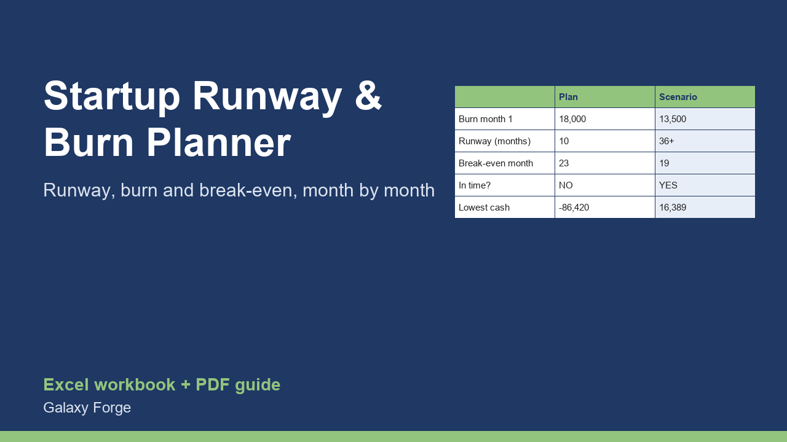

Month by month for three years: revenue, costs, burn and cash. See your runway, your break-even month, and whether you reach break-even before the money runs out, with a second scenario to compare.
Runway is the question every founder of a small or early company has to answer honestly: at the current burn, how many months until the bank account reaches zero, and does the business become profitable before that?
This planner projects 36 months from a few assumptions you control: cash today, current monthly revenue and costs, and how fast each grows. It adds any one-off items you know about (a fundraise, an equipment purchase, a big contract) and calculates monthly burn, ending cash, your runway, your break-even month and whether you get there in time.
A second scenario with its own assumptions sits next to the plan, so you can see what a cost cut, slower growth or a price increase does to your runway before you decide.
1) Assumptions: cash in the bank, this month's revenue and total costs, and the monthly growth rate of each (for the plan and for the scenario). 2) Plan and Scenario: in One-off items, enter known amounts in the month they happen: positive for money in (investment, loan), negative for money out (equipment, legal). 3) Summary: runway in months, break-even month, lowest cash and whether break-even comes first, for both. 4) Change one assumption at a time in the scenario to see what moves the result most.
Price: $15, one-time. Download: startup_runway_burn_planner.xlsx (Assumptions, Plan, Scenario, Summary) and this guide. Works in Excel 2016 or later, Excel for Mac and Excel on the web; opens in Google Sheets and LibreOffice.
New product, listed 2026-10-23: no sales or reviews yet. Example figures in the workbook are illustrative.
This workbook is a planning model, not financial, investment or legal advice. Projections are only as good as the growth and cost assumptions you enter; real results will differ.